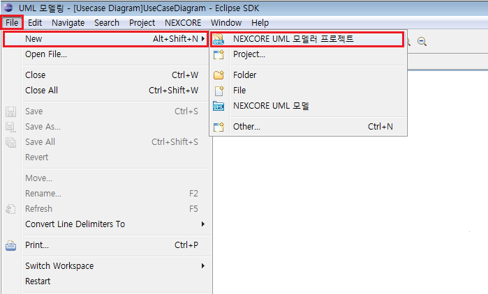
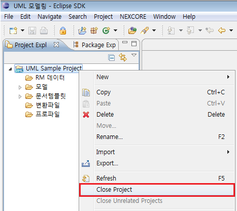
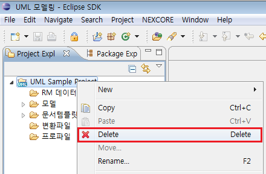

1. 프로젝트 생성
설계 환경을 구성하기 위해서 설계의 기본 단위인 프로젝트를 생성해야 합니다. 프로젝트는 UML 모델과 모든 설계 요소를 포함합니다.
1.1 프로젝트 생성 #1 (파일 메뉴)
기본 메뉴의 파일 메뉴에서 ‘New’를 선택한
후, NEXCORE UML 모델러 프로젝트를 선택합니다.

<그림 1. 메뉴 바의 프로젝트 생성 메뉴>
프로젝트 생성 마법사 창에 프로젝트 명(필수)을
입력하고, 위치를 설정(옵션)합니다.
프로젝트 생성과 함께 모델도 생성해주길 원한다면 ‘NEXCORE UML 모델 생성’에
체크한 후, UML 모델명을 입력합니다. 입력한
UML 모델명이 파일명인 동시에 기본 모델명이 되며, 생성된 프로젝트 하위에
UML 모델 파일이 생성되게 됩니다. 설정이 완료되었으면
Finish 버튼을 클릭합니다.

<그림 2. 프로젝트 생성 마법사 창>
1.2 프로젝트 생성 #2 (프로젝트 탐색기)
프로젝트 탐색기 창의 빈 영역을 우 클릭한 후 생성->프로젝트
메뉴를 선택한 후, NEXCORE UML 모델러 프로젝트를 선택하거나,
탐색기 안의 요소를 하나 선택한 후 우 클릭하여 나오는 NEXCORE UML 모델러
프로젝트를 바로 선택합니다. (이후 흐름은 [프로젝트
생성 #1]과 동일)

<그림 3. 트리 영역에서 프로젝트 생성>
1.3 프로젝트 생성 #3 (Tool bar)
작업 환경의 좌측 상단에 있는 ‘New’ Tool bar
버튼을 클릭해서 New 마법사 창을 연 후,
NEXCORE UML 모델러 프로젝트를 선택하거나, ‘New’ Tool bar 버튼의
오른쪽에 있는 화살표를 클릭하여 나오는 메뉴에서 NEXCORE UML 모델러 프로젝트를 선택합니다.
(이후 흐름은 [프로젝트 생성 #1]과 동일)

<그림 4. 프로젝트 생성 Tool bar 버튼>
2. 프로젝트 구조
NEXCORE UML 모델러 프로젝트를 생성하면
기본적으로 모델 폴더와
RM 데이터 폴더, 문서 템플릿 폴더, 변환파일 폴더, 프로파일 폴더가 생성됩니다.
모델 파일은 프로젝트 하위에서는 일반 파일로 표시되며, 프로젝트 하위의 모델 폴더
안에 있을 때만 모델 내부 구조를 보거나 편집 가능합니다. 모델 폴더는 프로젝트 생성 시 생성되는
‘모델’ 폴더만이 아니라 임의의 폴더로 대체
가능하며, 필요에 따라 ‘모델’
폴더의 이름을 변경하여 사용할 수도 있습니다.

<그림 5. 프로젝트 구조>
 RM 데이터
폴더는 요구사항 관리 도구(Requirement Management)와 UML 모델러 연계에 사용할 데이터 파일을 관리하는 폴더입니다.
RM 데이터
폴더는 요구사항 관리 도구(Requirement Management)와 UML 모델러 연계에 사용할 데이터 파일을 관리하는 폴더입니다.
 모델 폴더는
모델링에 사용되는 'UML 모델'을 관리하는 폴더입니다.
모델 폴더는
모델링에 사용되는 'UML 모델'을 관리하는 폴더입니다.
 문서 템플릿
폴더는 '문서 산출물' 생성에 사용되는 산출물 템플릿을 관리하는 폴더입니다.
문서 템플릿
폴더는 '문서 산출물' 생성에 사용되는 산출물 템플릿을 관리하는 폴더입니다.
 변환파일
폴더는 MDA Designer, MDA Developer 도구와 연계되었을 시 사용할 규칙 파일들을 관리하는 폴더입니다. 사용자의 필요에 따라
이름을 변경하거나 삭제할 수 있습니다.
변환파일
폴더는 MDA Designer, MDA Developer 도구와 연계되었을 시 사용할 규칙 파일들을 관리하는 폴더입니다. 사용자의 필요에 따라
이름을 변경하거나 삭제할 수 있습니다.
 프로파일
폴더는 'UML 모델'에 적용할 프로파일을 관리하는 폴더입니다.
프로파일
폴더는 'UML 모델'에 적용할 프로파일을 관리하는 폴더입니다.
3. 프로젝트 관리
프로젝트 관리는 해당 프로젝트가 어떤 성격을 지니고 있는지를 알려주는 특성입니다.
NEXCORE UML 모델러 프로젝트는
(UML
아이콘 표시)로 해당 프로젝트가 NEXCORE UML 모델러 프로젝트임을 표시합니다.
프로젝트 관리를 변경하기 위해서는 프로젝트 탐색기에서 해당 프로젝트를 우 클릭하고 UML
[UML 모델링 프로젝트 추가/삭제] 메뉴를 선택합니다.

<그림 6. 프로젝트 관리>
4. 프로젝트 닫기 (Close)
프로젝트 탐색기 창에서 해당 프로젝트를 우 클릭하고 닫기 메뉴를 선택합니다.

<그림 7. 프로젝트 닫기>
5. 프로젝트 열기 (Open)
프로젝트 탐색기 창에서 해당 프로젝트를 우 클릭하고, 열기 메뉴를 선택합니다.

<그림 8. 프로젝트 열기>
6. 프로젝트 삭제
6.1 프로젝트 삭제 #1 (편집 메뉴)
프로젝트 탐색기 창에서 해당 프로젝트를 선택하고,
메뉴 바의 편집 -> 삭제 메뉴를 선택합니다. (단축키:
Alt + e -> d 또는 프로젝트 선택 후, Enter키 입력)

<그림 9. 편집 메뉴를 이용한 프로젝트 삭제 >
6.2 프로젝트 삭제 #2 (프로젝트 탐색기)
프로젝트 탐색기 창에서 해당 프로젝트를 우 클릭하고, 삭제 메뉴를 선택합니다.

<그림 10. 트리 영역의 프로젝트 삭제 팝업 메뉴>
6.3 프로젝트 삭제 #3 (단축키)
프로젝트 탐색기 창에서 해당 프로젝트를 선택하고,
Delete 키를 누른다.